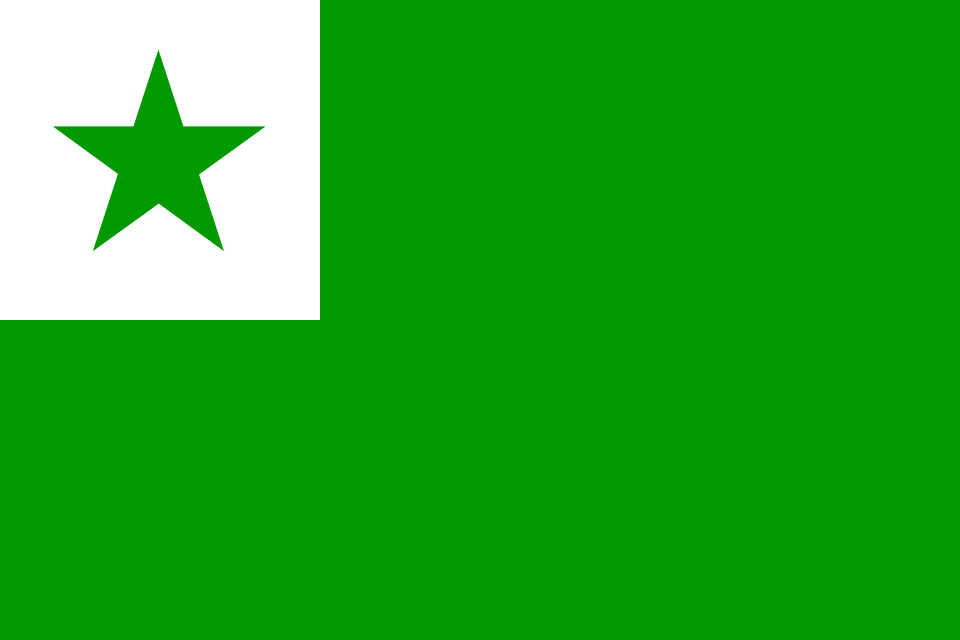
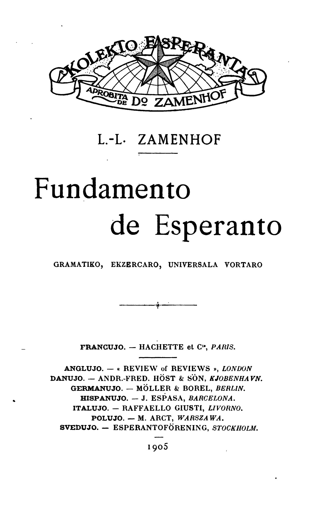

What is Esperanto?
Esperanto is a constructed language [as opposed to a natural language] created in 1887 by Doctor L. L. Zamenhof in Warsaw. Created to be simple and easy to learn, one could call Esperanto the "Modern Latin." This description is quite apt due to Esperanto's structure and linguistic blend. Esperanto itself is a blend of several languages but primarily those of the romance language family. Esperanto is the most successful attempt at an international auxiliary language to date and inspired a second famous constructed language, "Toki Pona". Esperanto currently has around two million speakers although this number is hotly debated among Esperantists. Although Esperanto was not made to replace natural languages or truly intended to be a native language there are around 1000 native speakers.

The sixteen grammar rules and other basics
Created in 1887 by Doctor L. L. Zamenhof in Warsaw, Poland, Esperanto was designed to be a neutral international auxiliary language meant to make communication easier and hopefully facilitate peace and harmony among people of vastly diffrent cultures, languages, and schools of thought. Anyone can be an Esperantist as the language is not tied to one religon, culture, nation, or people. Esperanto was made to have 16 easy to comprehend grammar rules, consistent spelling and phonetic pronuciation.
Some features of Esperanto grammar

The fundamental text of Esperanto, published in 1905.
Esperantist culture
Due to the international nature of Esperanto, a unique culture has developed among its speakers. Esperanto culture while hard to fully pin down does have its own distinct characteristics and traditions. Many Esperantists around the world participate in hosting other Esperantists in their homes or hostels for little to no cost. Esperantist culture is also highly influenced by the politics of Esperanto, which call for world peace, pacifism, anti-nationalism, and good will among everyone no matter their language. Many Esperantists also create music, movies, and literature in the language and proudly display the flag or other symbols of Esperanto, such as the "Verda Stelo" or green star in their homes or on their person.
Alternative writing systems
While usually written in the Latin script, Esperanto has several alternative writing systems, including the Cyrillic and Shavian scripts, although these are highly uncommon, unstandardized and not typically used in broader Esperantist spaces. My favorite of these is Cyrillic esperanto, which i typically write in. These scripts do not change the pronunciation of Esperanto. Alternative Esperanto scripts are also seen in the visual novel game The Expression Amrilato, which uses Juliamo. The television show Resident Alien also uses an extensively modified script for Esperanto that does not indicate diacritics and is written and read right to left. Examples below.
Example sentence: I like books, cats, and flowers.